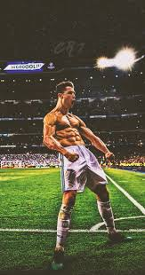

Cristiano Ronaldo dos Santos Aveiro nació en Funchal, Madeira, el 5 de febrero de 1985. Debutó a los 17 años, lleva 18 temporadas como futbolista profesional, ha dejado huella en todos los equipos que estuvo y es considerado el futbolista más completo del mundo.
Estamos hablando de un delantero inigualable. De un jugador con 1.000 partidos, 725 goles, 231 asistencias y 31 títulos entre sus clubes y selección. Un futbolista único e irrepetible que ha ganado 5 Balones de Oro y 4 Botas de Oro, entre otros tantos premios individuales.
Es el máximo goleador histórico del Real Madrid Club de Fútbol (450 goles); el máximo goleador histórico de la Selección de Portugal y el máximo goleador a nivel de selecciones en Europa (99 goles); el máximo goleador histórico de la Liga de Campeones (129 goles); y el único en toda la historia que ha sido campeón en las Ligas de Inglaterra, España e Italia. Récords lo han llevado a ser considerado el mejor futbolista del mundo.
Pero la grandeza de Cristiano Ronaldo va mucho más allá de todo lo que ha conseguido dentro de la cancha. Fuera de ella también ha demostrado ser diferente al resto. Es un profesional (en todo el sentido de la palabra) y un verdadero ejemplo a seguir. Los hombres quieren ser como él y las mujeres quieren tener un novio como él.
